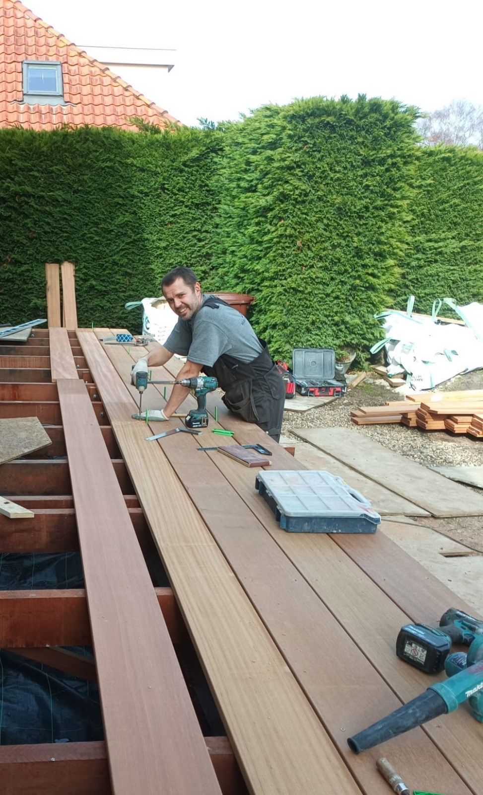

Ik ben Gert Vader, geboren en getogen in Maarssen, en in 2018 heb ik de keuze gemaakt om mijn eigen klus- en onderhoudsbedrijf op te richten. Wat ooit is begonnen als hobby en vakantiewerk is uitgegroeid tot een bedrijf met ondertussen al ruim 10 jaar ervaring. Ik werk met een betrouwbare groep vakmensen en hierdoor kan ik kleine en middelgrote projecten/verbouwingen realiseren. Elke opdracht is voor mij weer een uitdaging om aan alle wensen te voldoen en op die manier het beeld dat de klant heeft werkelijkheid te maken.
Op deze site zijn veel voorbeelden te zien van alle opdrachten die de afgelopen jaren succesvol zijn voltooid. Neem gerust contact op als u wilt weten wat ik voor u kan betekenen. Ik denken graag met u mee!
